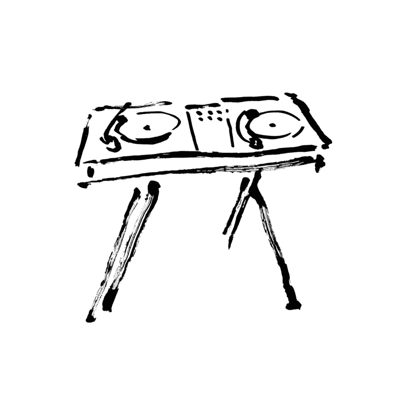

Location mieten München: Chroma in der Maxvorstadt (Barer Straße 38, Eingang Gabelsbergerstraße, 80333 München) ist buchbar als exklusive Event Location für private Feiern, Firmenevents, Pop-up-Dinners, Vernissagen und Gastronomie-Formate. Eigene Events wie das Five Course Seated Dinner mit Onda Culinary Kitchen finden ebenfalls hier statt.
